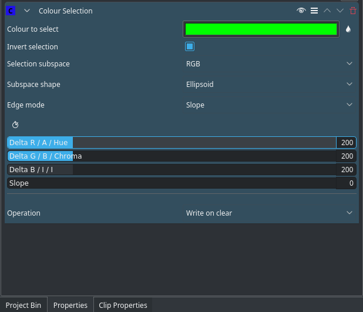

Chroma-Key¶
The Chroma-Key is a more advanced version of the Chroma Key effect. Chroma-Key allows for some basic feathering (by changing the Edge Mode) and much more fine-grained control over how much & in which way you remove the background.
This is better for backgrounds that have less contrast with the foreground, or more complex backgrounds. For simple backgrounds (such as green, blue, red or possibly black), use the Chroma Key effect.
Basic Technique¶
Contents
Find a clip with a background (preferably multiple, or slightly complex, because the “chroma key effect” can do easy backgrounds such as green or blue). Add the Chroma-Key effect to the clip.
After this, either chose the color using the little droplet button. Click on the droplet button, and then click on the background part of the clip you want to remove. Adjust the Delta sliders until the background is removed correctly. This might need to experimenting. If you find it isn’t removing the background well, try changing the “selection subspace” and experiment again. If you experimented and cycled through all the “selection subspaces”, and the background isn’t still removed properly, then it is probably too complicated for Kdenlive to remove. At this point, you will need to use Rotoscoping.
If the effect took lots of time to experiment, and you will need to use this effect again, then click on the three horizontal lines in the top right corner, and then click Save effect. Give the effect a name, and save. You can now search for this specific effect in your effects tab.
All Options¶
Here is an outline of all the options:
Color to select: the color to select. This is the color that will be transparent/the only color that is opaque.
Invert selection: When ON (default), the selected color will be transparent. When OFF the selected color will be opaque. Keeping the selected color opaque may be more effective if the foreground is simple and the background is complicated
Selection Subspace options are: RGB (Red Green Blue), ABI and HCI (Hue Chromacity Intensity)
These different options yield different results. While RGB should yield the sharpest and best results, sometimes (as user:themickyrosen-left have seen from experience) the other option, HCI & ABI, can yield much better results than RGB. So if RGB isn’t producing good results then try on of the other options.
Note
Previews of video chroma keyed using HCI will be slow since it has to calculate values for every single pixel.
Edge Mode Options are: Hard, Fat, Normal, Skinny, Slope
If the Edge Mode is set to slope, you can use the “slope” slider. This slider determines the smoothness of the edges. The higher the value, the smoother the edges of your color selection will be.
“Hard” means there is no featuring (edges are not smooth at all). Any part of the image/video is either fully opaque and fully transparent. This means there will be no blue between the removed parts and the remaining parts whatsoever, and this option is useful if your chroma key turned out to be perfect.
The remaining options (“Fat”, “Normal” and “Skinny”) create a gradual transition between transparent and opaque. The fatter the choice, the more the selected areas are filled towards the rim (AKA more featuring for fatter choices). This is useful if your color selection did not turn out that well.
Delta XXXX: These three parameters determine the tolerance of the chroma keying. The higher the value, the more of the background is removed. The lower the value, less is removed. A bit of experimenting is required to find the correct values for each clip.
See Also¶
See also Chroma Key which does color based alpha selection but is a bit simpler.
This page covers some Color Theory to help understand Hue, Chroma, Luminance, etc.